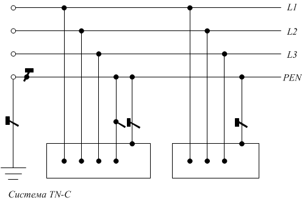
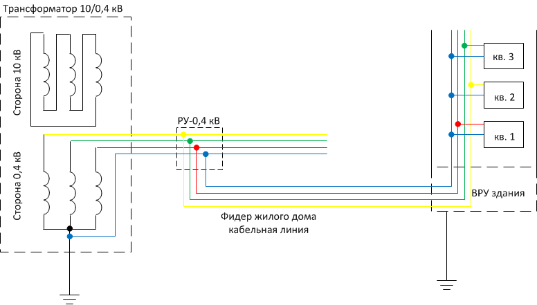
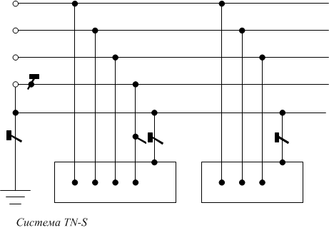
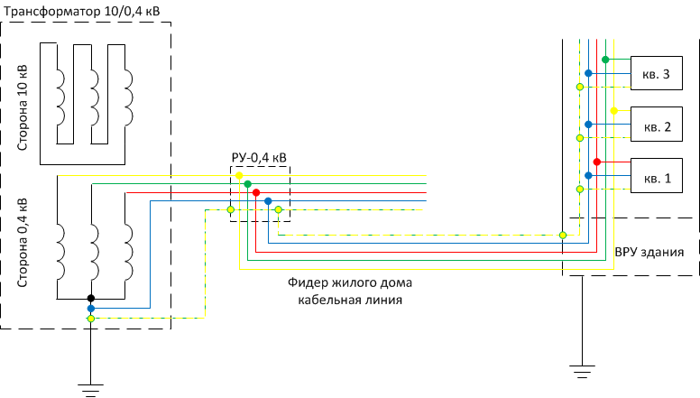

Системы заземления потребителей
Системы заземления потребителей
Немного внимания стоит уделить двум самым распространенным системам заземления: TN-C и TN-S. Все эти системы рассматриваются в главе 1.7 ПУЭ (правила устройства электроустановок) но, тем не менее, остановимся на этих двух, как уже было сказано, самых распространенных системах которые наиболее часто встречаются в постройках административного и жилого назначения.
Система TN-C
Наверное самая распространенная система для построек прошедших десятилетий, в которой в нулевом проводе совмещена как и защитная функция так и функция обеспечивается работоспособность однофазных потребителей работающих от 220 В. Так же он необходим для реализации выравнивания напряжения в случаях несимметричной нагрузки потребителей. В такой системе данный проводник называется PEN.
На этом рисунке так же представлена система TN-C в более наглядном варианте на примере питания жилого дома от трансформаторной подстанции. PEN проводник обозначен синим цветом. Для каждой квартиры предусмотрена своя фаза и общий "рабочий ноль". Так как, в данном случае, мы рассматриваем жилой дом старой постройки, здесь изображена двухпроводная сеть (фаза ноль) в качестве защитного проводника на квартиры отдельный провод не предусматривался. Оно и понятно - представим что токопроводящие корпуса потребителей квартир были бы занулены (преднамеренно соединены с PEN проводом), тогда в случае пробоя фазы на корпус и при отказе защиты появился бы риск отгорания общего PEN провода и под опасным потенциалом оказались бы все квартиры. Поэтому, как правило, занулено лишь ВРУ (вводно-распределительное устройство). Надо заметить что такая система в настоящее время устарела.
Система TN-S.
В данном случае нулевой проводник N выполняет функцию "рабочего нуля", а PE предусмотрен в качестве защитного проводника и на всем протяжении линии разделены.
Более наглядное изображение на примере все того же многоквартирного дома: здесь мы видим что к каждой квартире подходит три провода (трехпроводная сеть), фазный провод, рабочий нулевой проводник и третий желто-зеленный провод (PE-проводник) предназначен для преднамеренного соединения токопроводящих корпусов потребителей с контуром заземления. Такая система в настоящее время применяется для вновь сооружаемых жилых и общественных зданий.